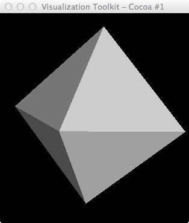
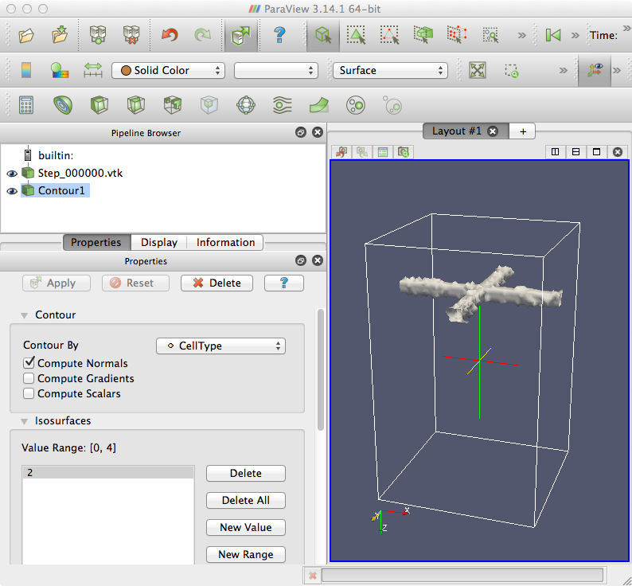

Can we use VTK's Delaunay filter to generate tetrahedra that can be input to a PDE solver (e.g. FEniCS)?
~/Documents/Glazier/Abbas/2012-Dec$ ty f_3x3x3.vtk # vtk DataFile Version 3.0 3D data ASCII DATASET STRUCTURED_POINTS DIMENSIONS 3 3 3 SPACING 1 1 1 ORIGIN 0 0 0 POINT_DATA 27 FIELD FieldData 1 CellType 1 27 long 0 0 0 0 1 0 0 0 0 0 1 0 1 0 1 0 1 0 0 0 0 0 1 0 0 0 0
~/Documents/Glazier/Abbas/2012-Dec$ ty delny_celltype.py
#!/usr/bin/env python
# This example shows how to use Delaunay3D with alpha shapes.
import vtk
from vtk.util.numpy_support import numpy_to_vtk, vtk_to_numpy
import sys
import string
argc = len(sys.argv)
print 'argc=',argc
if argc < 4:
print 'Usage: ',sys.argv[0],' <vtkfile celltype alpha>'
raise ValueError, 'Too few input args'
idx=1
infile = sys.argv[idx]
idx += 1
celltype = string.atoi(sys.argv[idx])
print 'celltype=',celltype
idx += 1
alpha = string.atof(sys.argv[idx])
print 'alpha=',alpha
maxX=50
maxY=50
maxZ=80
reader = vtk.vtkDataSetReader()
#reader.SetFileName('f_3x3x3.vtk')
#reader.SetFileName('Step_000000.vtk')
reader.SetFileName(infile)
#points = vtk.vtkPoints()
aax0 = vtk.vtkAssignAttribute()
aax0.SetInputConnection(reader.GetOutputPort())
#aax0.Assign("CellId","SCALARS","POINT_DATA")
aax0.Assign("CellType","SCALARS","POINT_DATA")
updateFlag = True
if updateFlag:
aax0.Update()
typeRange = aax0.GetOutput().GetScalarRange()
#print 'CellId range: ',typeRange
print 'CellType range: ',typeRange
#-------------------
srate = 1
ct_voi = vtk.vtkExtractVOI()
ct_voi.SetInputConnection(aax0.GetOutputPort())
#ct_voi.SetVOI(0,2,0,2,0,2)
ct_voi.SetVOI(0,maxX-1, 0,maxY-1, 0,maxZ-1)
#ct_voi.SetSampleRate(srate,srate,1)
if updateFlag:
ct_voi.Update()
tris = vtk.vtkDataSetTriangleFilter()
tris.SetInputConnection(ct_voi.GetOutputPort())
thresh = vtk.vtkThresholdPoints()
thresh.SetInputConnection(tris.GetOutputPort())
thresh.ThresholdBetween(celltype,celltype) # also rf. thresh.ThresholdByLower, thresh.ThresholdByUpper
thresh.Update()
pts = thresh.GetOutput().GetPoints()
print 'thresh pts=',pts
profile = vtk.vtkPolyData()
profile.SetPoints(pts) # TypeError: argument 1: method requires a vtkPoints, a vtkPointData was provided
## Delaunay3D is used to triangulate the points. The Tolerance is the
## distance that nearly coincident points are merged
## together. (Delaunay does better if points are well spaced.) The
## alpha value is the radius of circumcircles, circumspheres. Any mesh
## entity whose circumcircle is smaller than this value is output.
delny = vtk.vtkDelaunay3D()
delny.SetInput(profile)
#delny.SetTolerance(0.01)
delny.SetAlpha(0.2)
delny.SetAlpha(alpha)
#delny.BoundingTriangulationOff()
## Shrink the result to help see it better.
#shrink = vtk.vtkShrinkFilter()
#shrink.SetInputConnection(delny.GetOutputPort())
#shrink.SetShrinkFactor(0.9)
map = vtk.vtkDataSetMapper()
#map.SetInputConnection(shrink.GetOutputPort())
map.SetInputConnection(delny.GetOutputPort())
#map.SetInputConnection(tris.GetOutputPort())
#map.SetInputConnection(tris2.GetOutputPort())
triangulation = vtk.vtkActor()
triangulation.SetMapper(map)
#triangulation.GetProperty().SetColor(1, 1, 1)
ren = vtk.vtkRenderer()
renWin = vtk.vtkRenderWindow()
renWin.AddRenderer(ren)
iren = vtk.vtkRenderWindowInteractor()
iren.SetRenderWindow(renWin)
ren.AddActor(triangulation)
ren.SetBackground(0, 0, 0)
renWin.SetSize(500, 500)
renWin.Render()
iren.Initialize()
iren.Start()
python delny_celltype.py f_3x3x3.vtk 1 1
Sample .vtk file:
Contour on isovalue=2 (ParaView doesn't have the vtkDiscreteMarchingCubes filter)
python delny_celltype.py Step_000000.vtk 3 1 <p>